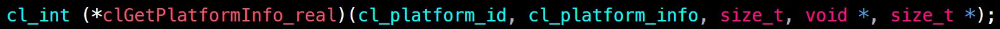
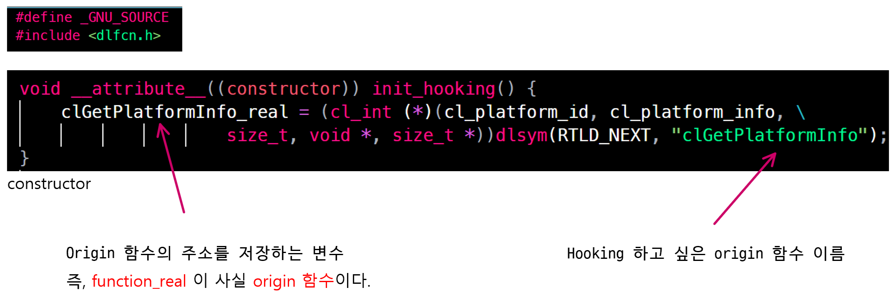
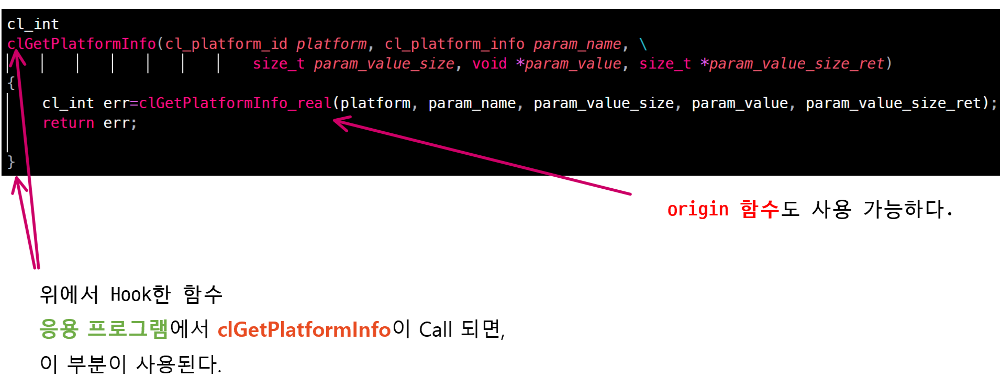
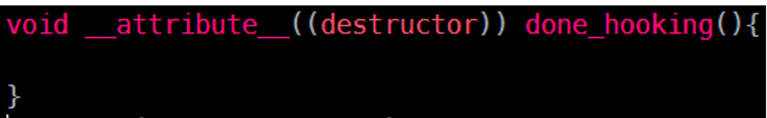

후킹(Hooking)
Hooking
- 후킹: OS나 App등에서 함수 호출, 메시지, 이벤트 등을 중간에서 바꾸거나 가로챔. 이때 간섭된 함수 호출, 이벤트, 메시지를 처리하는 코드를 후크라고 한다.
- shared library을 사용하여, 기존 바이너리에서 API 를 호출할 때 가로채, 내가 정의한대로 사용케함
- 주의점
- LD_PRELOAD는 SU가 Set 되어 있으면 무시된다. 보안상 이유
- init constructor, destructor에서 system, fork, popen으로 프로세스를 실행시키면 그 프로세스도 constructor, destructor 명령을 실행하기 때문에 정말 주의 무한 실행된다.
- 속성
- LD_PRELOAD에 설정된 shared library는 모든 shared library보다 먼저 로딩
- 타인 소유 파일에도 동작
- secure-execution mode로 실행되면 제약이 걸린다.
- overloading을 따지지 않고 함수 이름 일치만하면 후킹된다.
- main은 후킹 안된다.
- LD_PRELOAD에 등록한 library가 위치한 path가 LD_LIBRARY_PATH 나 /etc/ld.so.conf에 등록되어 있을 필요는 없다.
- LD_PRELOAD나 /etc/ld.so.conf 에 등록된 디렉터리에 위치한 라이브러리는 라이브러리 파일 이름만 적어도 인식한다.
- wrapper function가 실행 시, 원래 함수가 실행되어야 하면 dlsym을 사용해 원래 함수 포인터를 얻은 뒤 return origin_function
- dlsym을 이용하기 위해 #include <dlfcn.h> 사용 및 -ldl 링크 옵션
- RTLD_NEXT는 #define _GNU_SOURCE해야 정의된다.
실행 커맨드
- 후킹코드를 담아 제작한 shared library를 LD_PRELOAD로 실행해야한다.
- 특정 바이너리 실행
$ LD_PRELOAD=/where/library/path [binary path] - 쉘에 등록한 다음 사용 (어떤 바이너리든 실행히 LD_PRELOAD 동작)
$ export LD_PRELOAD=/where/library/path -
etc/ld.so.preload에 등록해 계정 상관없이 시스템 전역으로 후킹
- 2개 이상 PreLoad 하는 법
$ LD_PRELOAD="lib1.so lib2.so" ./app
구현
-
후킹을 구현하는 shared library 본체와 header file로 나뉜다.
- header file
- shared library
- constructor
- Define hooked function
- destructor
header
clGetPlatformInfo() 함수를 후킹해 사용하고자 한다!

clGetPlatformInfo라는 API를 후킹해서 여러 파일에 사용하고 싶다면, 위와 같이 헤더파일에 정의
Hook_API.h
cl_int (*clGetPlatformInfo_real)(cl_platform_id, cl_platform_info, size_t, void *, size_t *);
constructor
- 후킹을 하는 shared library 본체의 constructor
Hook_Library.c
#include <stdio.h>
#include ...some system headerfiles
#include "Hook_API.h"
#define _GNU_SOURCE_
#include <dlfcn.h>
void __attribute__((constructor)) init_hooking(){
clGetPlatformInfo_real = (cl_int (*)(cl_platform_id, cl_platform_info, \
size_t, void*, size_t *))dlsym(RTLD_NEXT, "clGetPlatformInfo");
}

- RTLD_NEXT사용 위해 #define _GNU_SOURCE정의
- 혹시라도 #define _GNU_SOURCE가 안먹히면, 컴파일 때 전처리기 옵션으로
-D_GNU_SOURCE 주기
- 혹시라도 #define _GNU_SOURCE가 안먹히면, 컴파일 때 전처리기 옵션으로
- dlsym() 사용 위해, #include <dlfcn.h> 및 -ldl 링크 옵션
- Dynamic Library - runtime loaded libs는 여기 참고
- Dynamic Library - runtime loaded libs는 여기 참고
- constructor에서 후킹하고 싶은 함수를 명시한다.
origin함수주소=(return자료형 (*)(arg1자료형..))dlsym(RTLD_NEXT, “후킹 하고픈 함수”);
- 앞으로 “후킹 하고픈 함수”가 Call되면 내가 정의한대로 사용 가능
- “후킹 하고픈 함수”의 실제 함수는 origin함수주소가 담긴 변수에 담겨서 사용가능
Define hooked function
Hook_Library.c
#include <stdio.h>
#include ...some system headerfiles
#include "Hook_API.h"
#define _GNU_SOURCE_
#include <dlfcn.h>
void __attribute__((constructor)) init_hooking(){
clGetPlatformInfo_real = (cl_int (*)(cl_platform_id, cl_platform_info, \
size_t, void*, size_t *))dlsym(RTLD_NEXT, "clGetPlatformInfo");
}
cl_int
clGetPlatformInfo(cl_platform_id platform, cl_platform_info param_name, \
size_t param_value_size, void *param_value, size_t *param_value_size_ret){
/* Define What you want to do */
cl_int err=clGetPlatformInfo_real(platform, param_name, param_value_size, param_value, param_value_size_ret);
// If you want to call original API
return err;
}

-
응용 프로그램에서 Hook한 함수 Call시, 우리가 정의한 Scope가 사용된다.
-
바로 “return Origin함수주소” 로 원본 함수 return 하면 그게 그거
destructor
- _destructor_에서는 후킹 라이브러리가 종료할 때 취할 행동 정의
Hook_Library.c
#include <stdio.h>
#include ...some system headerfiles
#include "Hook_API.h"
#define _GNU_SOURCE_
#include <dlfcn.h>
void __attribute__((constructor)) init_hooking(){
clGetPlatformInfo_real = (cl_int (*)(cl_platform_id, cl_platform_info, \
size_t, void*, size_t *))dlsym(RTLD_NEXT, "clGetPlatformInfo");
}
cl_int
clGetPlatformInfo(cl_platform_id platform, cl_platform_info param_name, \
size_t param_value_size, void *param_value, size_t *param_value_size_ret){
/* Define What you want to do */
cl_int err=clGetPlatformInfo_real(platform, param_name, param_value_size, param_value, param_value_size_ret);
// If you want to call original API
return err;
}
void __attribute__((destructor)) done_hooking(){
}

Compile
- 다시 강조하지만 컴파일 때, -ldl 링크 필수
- #define _GNU_SOURCE가 안먹히면 -D_GNU_SOURCE 옵션 추가
$ gcc -fPIC -c -L. Hook_Library.c Hook_API.h -ldl
$ gcc -shared -L. Hook_Library.o -ldl -o Hook_Library
사용
$ LD_PRELOAD=./Hook_Library ./binary